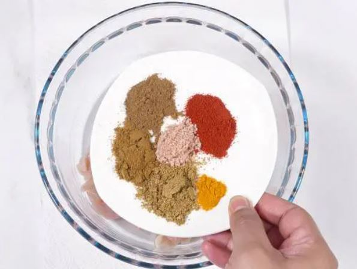
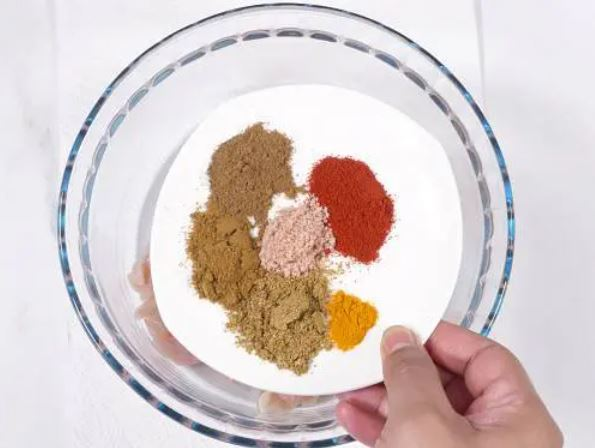
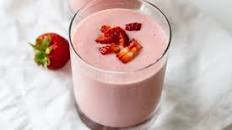
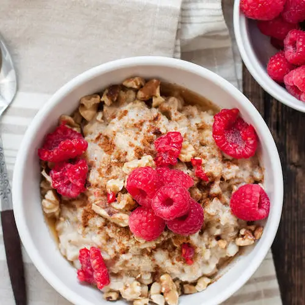

Homemade Chicken Tikka Masala Recipe
Origin: India Source: https://tasty.co/recipe/homemade-chicken-tikka-masalaCategory: Main Dish

Recipe Ingredients
Chicken Marinade
- 3 boneless, skinless chicken breasts
- ½ cup plain yogurt
- 2 tablespoons lemon juice
- 6 cloves garlic, minced
- 1 tablespoon minced ginger
- 2 teaspoons salt
- 2 teaspoons ground cumin
- 2 teaspoons garam masala
- 2 teaspoons paprika
Sauce
- 3 tablespoons oil
- 1 large onion, finely chopped
- 2 tablespoons minced ginger
- 8 cloves garlic, minced
- 2 teaspoons ground cumin
- 2 teaspoons ground turmeric
- 2 teaspoons ground coriander
- 2 teaspoons paprika
- 2 teaspoons chili powder
- 2 teaspoons garam masala
- 1 tablespoon tomato puree
- 3 ½ cups tomato sauce
- 1 ¼ cups water
- 1 cup heavy cream
- ¼ cup fresh cilantro, for garnish
- cooked rice, for serving
- naan bread, for serving
Recipe Steps
- Slice the chicken into bite-sized chunks.
- Combine the cubed chicken with the yogurt, lemon juice, garlic, ginger, salt, cumin, garam masala, and paprika and stir until well-coated.
- Cover and refrigerate for at least 1 hour, or overnight.
- Preheat the oven to 500°F (260°C). Line a high-sided baking pan or roasting tray with parchment paper.
- Place the marinated chicken pieces on bamboo or wooden skewers, then set them over the prepared baking pan, making sure there is space underneath the chicken to help distribute the heat more evenly. Bake for about 15 minutes, until slightly dark brown on the edges.
- Make the sauce: Heat the oil in a large pot over medium heat, then sauté the onions, ginger, and garlic until tender but not browned.
- Add the cumin, turmeric, coriander, paprika, chili powder, and garam masala and stir constantly for about 30 seconds, until the spices are fragrant. Stir in the tomato puree, tomato sauce, and 1 ¼ cups of water, then bring to a boil and cook for about 5 minutes. Pour in the cream.
- Remove the chicken from the skewers and add to the sauce, cooking for another 1-2 minutes. Garnish with cilantro and serve over rice or alongside naan bread.
- Enjoy!
Additional Food images


 

Strawberry Banana Smoothie
Recipe ingredients:
- One cup of stawberry
- Half a banana
- One cup of milk
Recipe steps:
- Cut strawberry into pieces and leave out the leaves
- Peel banana and rip half
- Pour and measure milk volume in a measuring cup
- Blend ingredients together, add ice for liking
Fruity peanut butter flavored oatmeal
Recipe ingredients:
- A tablespoon of peanut butter
- Half a cup of fresh fruits
- Half a cup of old fashioned oatmeal
- One cup of milk or water
Recipe steps:
- Measure half a cup of old fashioned rolled oats
- Measure a cup of water or milk
- Turn stove to high and add milk/water and oats together
- After the base boiled, cook for another 5-10 minutes
- Turn heat off, add peanut butter and fresh fruits